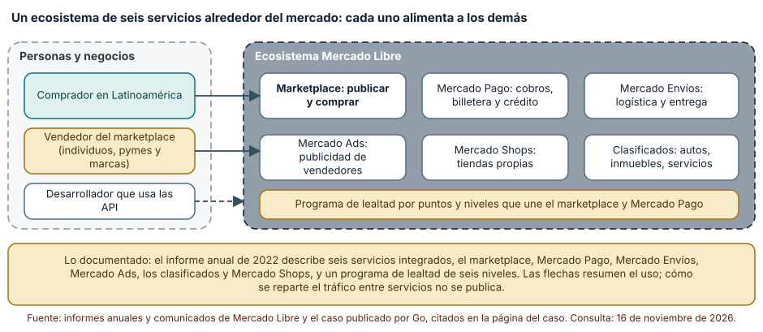
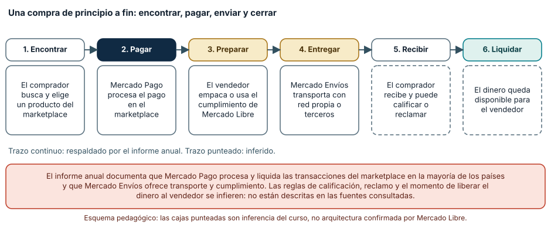
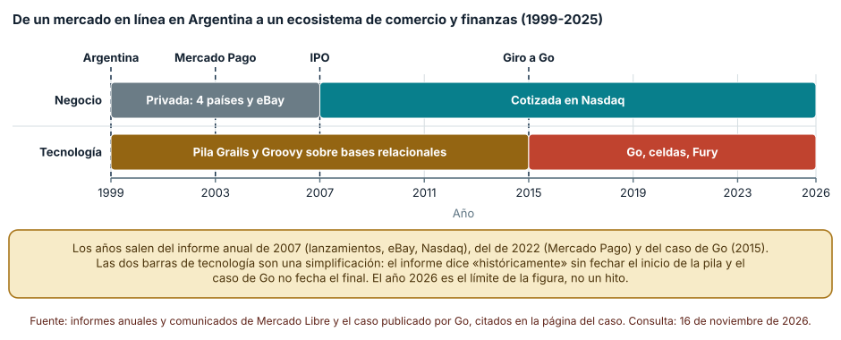

Etiquetas. [Documentado] = lo dice una fuente citada al final; [Inferido] = deducción del curso, puede ser falsa; [No se sabe] = no hay fuente pública consultada. Las cifras llevan año y fuente. No se reconstruye arquitectura confidencial.
Ficha histórica
| Dato | Valor | Fuente |
|---|---|---|
| Nombre | MercadoLibre, Inc. (Mercado Libre) | [M1], [M2] |
| Fundación | En marzo de 1999 Marcos Galperín, cofundador y director ejecutivo, escribió el plan de negocio mientras cursaba un MBA en Stanford; la empresa se constituyó en Delaware en octubre de 1999 | [M1] |
| Otros cofundadores | [No se sabe] con las fuentes consultadas: el informe nombra a Galperín como cofundador y no lista a los demás | [M1] |
| Primer lanzamiento | Argentina, agosto de 1999; Brasil, octubre; México, noviembre; Uruguay, diciembre | [M1] |
| Financiación temprana | Ronda de 7,6 millones de USD en noviembre de 1999 y de 46,7 millones en mayo de 2000 | [M1] |
| Alianza con eBay | Septiembre de 2001: eBay pasó a ser accionista y Mercado Libre adquirió su filial brasileña iBazar | [M1] |
| Mercado Pago | Lanzado como producto de custodia (escrow) en Argentina en noviembre de 2003 | [M1] |
| Salida a bolsa | Agosto de 2007, Nasdaq; las acciones comenzaron a cotizar el 10 de agosto | [M1] |
| Sede | Montevideo, Uruguay (oficinas ejecutivas); el caso de Go la sitúa en Argentina, lo que refleja el origen | [M2], [M3] |
| Escala (2024) | Más de 100 millones de compradores únicos al año; ingresos netos del cuarto trimestre de 6 100 millones de USD; 61 millones de usuarios mensuales en fintech | [M4] |
| Estado actual | Sociedad cotizada con seis servicios integrados | [M2] |
Contexto y problema
Documentado. El informe anual de 2022 describe una región con más de 650 millones de personas y uno de los crecimientos de internet y comercio electrónico más rápidos, con «desafíos culturales y geográficos» propios para operar una plataforma de comercio ([M2]). El de 2007 resume lo que se hizo al principio: una misma plataforma tecnológica en todos los países y un marketplace separado por país, sin interacción entre ellos ([M1]).
El problema de fondo era de confianza y de infraestructura: comprador y vendedor no se conocen, pagar a un desconocido es arriesgado y entregar un paquete en la región es difícil. Mercado Pago nació para dar confianza en el pago (el informe dice que «llevó confianza a la relación comerciante-consumidor» ([M2])) y Mercado Envíos para controlar la experiencia completa ([M2]). [Inferido] que cada servicio se creó para quitar la fricción que frenaba al anterior; el informe lo sugiere pero no lo formula así.
Cuando Mercado Pago empezó, el informe de 2007 lo describe como un producto de custodia; el de 2022, como un ecosistema financiero completo, incluidos terminales de cobro, QR, billetera, tarjetas, crédito, seguros y ahorro ([M1], [M2]). También observaron que muchas transacciones físicas seguían liquidándose en efectivo y que individuos y pymes estaban desatendidos por proveedores tradicionales ([M2]).
Mercado, usuarios y casos de uso
| Rol | Qué hace y qué gana | Qué cambia en su experiencia | Respaldo |
|---|---|---|---|
| Comprador | Compra en el marketplace, paga con Mercado Pago, recibe por Mercado Envíos | Programa de Protección al Comprador; puntos y niveles de lealtad | [M2] |
| Vendedor | Publica, cobra y envía; paga comisiones por transacción | Puede usar cumplimiento y almacenamiento de Mercado Libre; crea una tienda en Mercado Shops sin coste | [M2] |
| Anunciante | Promociona productos con Mercado Ads | Anuncios en búsquedas, banners y productos sugeridos | [M2] |
| Usuario de servicios financieros | Billetera, tarjetas, crédito, inversión | Ahorro con retiro rápido; crédito dentro y fuera del marketplace | [M2] |
| Desarrollador externo | Integra el marketplace y Mercado Pago por API | Documentación pública: OAuth, notificaciones (webhooks e IPN), cuentas y tarjetas de prueba | [M2], [M5] |
| Equipos internos | Construyen servicios sobre una plataforma común | Celdas autónomas y plataforma interna | [M2], [M3] |
| Autoridades financieras | Regulan pagos, lavado de activos y secreto bancario | [No se sabe] el detalle operativo | [M2] |
Alcance geográfico. El informe de 2022 lista el marketplace en varios países, con Mercado Pago, Mercado Envíos y Mercado Crédito en distintas combinaciones según el país ([M2]). Brasil, Argentina y México concentraron el 95,2 % de los ingresos netos de 2022 ([M2]).
Funcionalidad de principio a fin
- Primer contacto. El comprador llega por búsqueda, anuncio o campañas de fechas comerciales como Hot Sale, Cyber Monday y Black Friday ([M2]).
- Registro. [Documentado] que cualquier usuario registrado puede enviar y recibir pagos digitales y pagar compras en el marketplace ([M2]). [No se sabe] el proceso de verificación.
- Publicar (vendedor). Lista mercadería; el marketplace está «totalmente automatizado» y organizado por temas ([M2]).
- Comprar y pagar. Mercado Pago procesa y liquida todas las transacciones del marketplace en Argentina, Brasil, México, Chile, Colombia, Uruguay y Perú ([M2]). Admite cuotas, financiadas directamente o vendidas como activos ([M2]).
- Enviar. Mercado Envíos permite usar transportistas externos y servicios propios de cumplimiento y almacenamiento; en 2020 se lanzó Meli Air con aviones dedicados y existe una red de comercios vecinales («Meli Places») para dejar y recoger paquetes ([M2]). Más del 95 % de los envíos del cuarto trimestre de 2024 se completó dentro de la red gestionada y el 49 % llegó el mismo día o al siguiente ([M4]).
- Soporte y reclamos. El Programa de Protección al Comprador cubre casos de no recibir o recibir mal lo comprado, con reembolsos que pueden crecer al ampliarse la cobertura ([M2]).
- Operación diaria. Para el vendedor, el panel de ventas, publicidad y envíos; detrás, las celdas y la plataforma de la sección de arquitectura.
Negocio y economía
Modelo (documentado). Dos grandes fuentes: comercio, con servicios (comisiones por valor final y tarifas fijas, envíos netos de costos de transportistas, clasificados, publicidad) y venta de producto propio; y fintech, con comisiones fuera de la plataforma, cuotas, tarjetas, seguros, intereses de crédito y venta de terminales ([M2]).

Cómo leer la figura. Cada barra es un año reducido a 100 %; los segmentos son países. Mire primero el tamaño de Brasil y luego cuánto crecen Argentina y México. Dónde deja de valer. Son dólares de cada año: inflación y tipo de cambio mueven la composición, y el informe los cita como riesgos. No muestra la rentabilidad por país (la nota da la contribución directa, 40,5 % en Argentina y 15,3 % en México en 2022).
Cifras. En 2022 los ingresos netos fueron de 10 537 millones de USD (7 069 en 2021, +49 %), con una contribución directa de 21,6 % ([M2]). En el cuarto trimestre de 2024: ingresos netos de 6 100 millones (+37 %), valor vendido (GMV) de 14 500 millones, volumen de pagos (TPV) de 59 000 millones, activos bajo gestión de 10 600 millones y cartera de crédito de 6 600 millones ([M4]). El TPV incluye cobros fuera del marketplace, por eso supera al GMV.
Costos. [Documentado] que en 2022 tenían 13 856 empleados de tecnología y producto, frente a 9 471 en 2021 ([M2]). [No se sabe] el coste de logística, de crédito incobrable o de nube por separado en estas fuentes.
Ventajas (documentado por la empresa). Un ecosistema donde cada componente refuerza a los demás ([M4]) y una logística propia que controla la experiencia. [Inferido] que la combinación de comercio, pago y envío dificulta que un competidor replique solo una pieza.
Arquitectura y esquemas
Contexto

Cómo leer la figura. A la izquierda están las personas; el recuadro grande es el ecosistema. Las flechas muestran el uso principal. Dónde deja de valer. No muestra el reparto de tráfico entre servicios, ni países, ni sistemas internos.
Componentes

Cómo leer la figura. Cada fila es una capa, de la más externa (terceros) a la más interna (plataforma). Dónde deja de valer. Es la foto de 2019 (caso de Go) y 2022 (informe), no un inventario actual.
Documentado. El informe de 2022 dice que pasaron de un sistema cerrado y monolítico a uno abierto y desacoplado: dividieron los equipos en «celdas», cada una con su equipo, hardware, datos y código fuente, que interactúan por API; abrieron la plataforma a terceros y construyeron una plataforma como servicio propia que reduce la carga cognitiva de gestionar infraestructura y red ([M2]). El caso publicado por Go cuenta que en 2015 la pila de Groovy y Grails llegaba a su límite, con pruebas, compilaciones y despliegues lentos, y que se pasó a Go: un servicio grande redujo sus servidores de 32 a 4 y los núcleos por servidor de 4 a 2, y sirve 70 000 peticiones por máquina con 20 MB de memoria ([M3]). Fury, la plataforma como servicio, permite construir, desplegar, monitorear y gestionar servicios de forma independiente de la nube ([M3]).

Cómo leer la figura. El punto vacío es antes y el lleno después; cuanto más largo el segmento, mayor la reducción. Fíjese en que el eje es logarítmico. Dónde deja de valer. Es un único servicio elegido por un caso publicado por el proyecto Go; los núcleos totales son un producto de dos cifras, no una medida, y no incluyen el coste de reescribir.
Escala del tráfico. Una API de usuarios recibe entre 8 y 10 millones de peticiones por minuto con respuestas de menos de 10 ms, y las mayores superan 20 millones por minuto ([M3]). Centros de datos: [No se sabe] el reparto actual entre nube y propios; el informe de 2022 menciona sedes de datos en Virginia (EE. UU.) ([M2]).
Flujo de la operación crítica: una compra

Cómo leer la figura. De izquierda a derecha. Las cajas azules son el pago, las doradas la logística; las punteadas son inferidas. Dónde deja de valer. No describe cuándo se libera el dinero al vendedor ni las reglas de reclamos: no están en las fuentes consultadas.
Datos y escala
Mercado Pago, mercado y envíos comparten plataforma tecnológica pero cada país opera un marketplace separado ([M1]). La documentación pública para desarrolladores ofrece Checkout Pro, Checkout API, notificaciones por webhook e IPN, cuentas y tarjetas de prueba, OAuth y guías de seguridad (PCI DSS y OWASP) ([M5]). [No se sabe] los motores de bases de datos, el número de servicios y de celdas.
Casos especiales y cómo se resuelven
- Picos estacionales. El cuarto trimestre es el más fuerte en todos los países y el primero el más lento; las campañas Hot Sale, Black Friday y Cyber Monday elevan las transacciones; operar en ambos hemisferios mitiga parte de la estacionalidad ([M2]). [No se sabe] cómo se dimensiona la capacidad.
- Fraude y vendedores incumplidos. El informe reconoce quejas de usuarios que no reciben producto o dinero; puede suspender cuentas pero no obligar a cumplir, y mantiene el Programa de Protección al Comprador ([M2]).
- Cumplimiento regulatorio. Mercado Pago está sujeto a leyes de pagos, lavado de activos, secreto bancario y protección de datos (en Brasil, Argentina, México y otros); el informe cita las leyes y los bancos centrales como reguladores ([M2]).
- Inflación y divisas. Cita inflación, devaluaciones y controles cambiarios como riesgos que afectan lo que se informa ([M2]).
- Reintentos y duplicados en pagos. [Inferido] que, como en cualquier API de pagos con notificaciones asíncronas, se necesitan claves de idempotencia; la documentación consultada no lo confirmó, así que no se afirma.
- Fallos parciales. [No se sabe] los mecanismos de resiliencia internos.
- Sin conexión. [No se sabe].
Línea de tiempo

Cómo leer la figura. El eje es el año. Cada carril es una historia y las líneas verticales son hitos. Dónde deja de valer. Las barras de tecnología son aproximadas: el informe dice «históricamente» sin fechar el inicio de la pila.
- Marzo de 1999. Galperín escribe el plan de negocio ([M1]).
- Agosto a diciembre de 1999. Lanzamientos en Argentina, Brasil, México y Uruguay ([M1]).
- Octubre de 1999. Constitución en Delaware ([M1]).
- Noviembre de 1999 y mayo de 2000. Dos rondas de financiación ([M1]).
- Septiembre de 2001. Alianza con eBay ([M1]).
- Noviembre de 2003. Mercado Pago en Argentina ([M1]).
- Agosto de 2007. Oferta pública en Nasdaq ([M1]).
- 2015. El equipo de API empieza a migrar de Groovy y Grails a Go ([M3]).
- 2020. Lanzamiento de Meli Air ([M2]).
- 20 de febrero de 2025. Resultados de 2024: más de 100 millones de compradores únicos ([M4]).
Vínculo con el curso
| Concepto | Clases | Qué ilustra el caso |
|---|---|---|
| Modelos de negocio y métricas | SE-133, SE-136, SE-141 | Ecosistema con varias líneas de ingreso; GMV, TPV y compradores como métricas |
| Costos y economía del software | SE-134, SE-453 | Dónde se concentra el coste de una plataforma con logística propia |
| Microservicios y su coste | SE-532, SE-303 | De un sistema monolítico a servicios independientes |
| Arquitectura celular y radio de impacto | SE-536 | Las «celdas» de equipo, código y datos propios |
| Arquitectura socio-técnica | SE-310, SE-446 | Equipos autónomos alineados con la arquitectura |
| Plataformas internas | SE-358, SE-417 | Fury como camino pavimentado para crear servicios |
| Cloud, portabilidad y multi-nube | SE-349, SE-357 | Plataforma independiente de la nube |
| Concurrencia y latencia | SE-337, SE-376 | Go: miles de peticiones por máquina con poca memoria |
| Migración y reescritura | SE-438, SE-442, SE-437 | De Groovy y Grails a Go servicio por servicio |
| APIs, autenticación y webhooks | SE-242, SE-245, SE-331 | OAuth, notificaciones y APIs públicas |
| Dominio fintech e invariantes monetarias | SE-282, SE-246 | Pagos, custodia y consistencia contable |
| Sagas y compensación | SE-329 | Compra, pago y envío como proceso con reversión |
| Picos y capacidad | SE-375, SE-356 | Hot Sale, Black Friday y estacionalidad |
| Cumplimiento, privacidad y límites legales | SE-394, SE-322 | Leyes de pagos y de protección de datos por país |
| Internacionalización | SE-177 | Marketplace separado por país con plataforma común |
Qué no generalizar
- No hace falta una plataforma propia (Fury) ni celdas para un equipo pequeño: se justifican con miles de ingenieros (13 856 en tecnología en 2022) ([M2]).
- No se debe extrapolar el ahorro de Go (88 % menos de servidores) a otros sistemas: es un servicio, contado por el proyecto Go ([M3]).
- Los ingresos por país dependen de monedas inflacionarias; la comparación entre años en dólares engaña.
- Integrar pagos, logística y crédito exige licencias y capital que una empresa de software normal no tiene.
- Las fuentes no cubren seguridad, incidentes ni disputas con vendedores: el caso no dice que esos asuntos estén resueltos.
Fuentes públicas verificadas
Fecha de consulta: 16 de noviembre de 2026.
- [M1] Mercado Libre, Form 10-K de 2007 (PDF del sitio de relación con inversionistas): informe 2007. Respalda fundación, lanzamientos, rondas, eBay, Mercado Pago 2003 y la oferta de 2007.
- [M2] Mercado Libre, Form 10-K de 2022: informe 2022. Respalda servicios, modelo de ingresos, celdas, estacionalidad, regulación, riesgos y resultados por país.
- [M3] The Go Programming Language, «MercadoLibre Grows with Go», 10 de noviembre de 2019: caso de Go.
- [M4] Mercado Libre, «Financial results fourth quarter 2024», 20 de febrero de 2025: comunicado. Respalda GMV, TPV, compradores, envíos y usuarios fintech.
- [M5] Mercado Pago Developers, documentación de Checkout Pro: documentación. Respalda webhooks, IPN, OAuth, cuentas y tarjetas de prueba.
Límites. Nadie ejecutó ni midió Mercado Libre aquí. El 10-K de 2022 fue leído como PDF descargado con curl; la dirección de la sede se tomó de él. Los informes 2007 y 2022 son anteriores al 2024 de las cifras recientes.